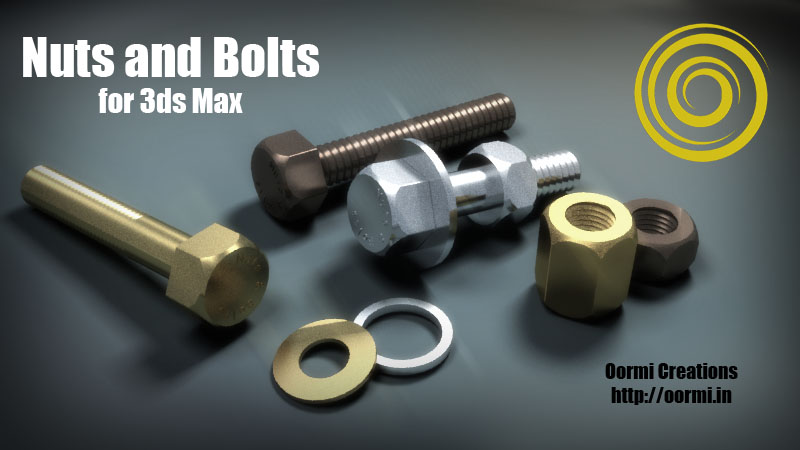

|
Nuts & Bolts 1.0.0 For Autodesk 3ds Max Help Document Oormi Creations
|
||||
|

|
||||
Running the Script Autodesk App Store installer: Install the script via the installer and access it from the Exchange Store menu in 3ds Max. If downloaded from other sites: The script is named NutsAndBolts-031.ms Simply drag the script file into 3ds Max. Or click on menu MaxScript->Run Script and select this script. No installation is needed. Quick Start
But to see the script in full action:
Actions Rollout Create Nuts & Bolts : Creates the nut, bolt and washer using the parameters defined in Settings Rollout. Nut, Bolt, Washer Checkbuttons : Enable/disable creation of parts. Preview : Click to see a rough preview. This helps to set the sizes etc. The preview is deleted when the actual model is created. Its also deleted when you click this checkbutton again. Color Swatches : Assign wirecolors to different parts or preview model.
Settings Rollout Bolt Group Head Diameter : Head is hexagonal, so its the corner to opposite corner dimension Head Height : Height or thickness of the head (chamfer is set automatically) Bolt Diameter : The max diameter of bolt, the threads cut inside. This is the dia of unthreaded part (if any) Bolt Height : Removed in v1.0.0 — replaced by two separate controls: Neck Length : Length of the unthreaded shaft between the head and the start of the threads. Set to 0 for a fully-threaded bolt. Threaded Height : Height of the threaded part.Thread Depth : The depth of the cut of threads Thread Pitch : The width of the thread (peak to peak) Thread Chamfer : The chamfer on the outer edge of the thread Weld Threshold : Adjust this if you see gaps between threads because of unwelded edges Segments : The number of segments of bolt geometry. Note that the actual segments will be an exact divisor of 360. Pick Bolt's Position : Pick any object (or a dummy) to create the bolt at that position. The bottom of the head is aligned to this position. (Sets only the position not rotation or scale) Nut Group Lock Button : Locks the spinner values to those of Bolt, so that you get a matching nut always. (Except the Play value). Uncheck this to set the Nut parameters independently. Outer Diameter : Nut is hexagonal, so its the corner to opposite corner dimension Inner Diameter : The dia of the hole Nut Height : Height or thickness of the Nut Thread Depth : The depth of the cut of threads Thread Pitch : The width of the thread (peak to peak) Thread Chamfer : The chamfer on the outer edge of the thread Weld Threshold : Adjust this if you see gaps between threads because of unwelded edges Segments : The number of segments of inner thread geometry. Note that the actual segments will be an exact divisor of 360. Play : Sets the gap between the Bolt threads and the Nut threads, so that the nut can slide effortlessly. Useful if you plan to 3D Print the model. Link to the Bolt : Parents the Nut to the Bolt Washer Group Outer Diameter : Size of the washer Inner Diameter : The dia of the hole Washer Height : Height or thickness of the washer Link to the Bolt : Parents the Washer to the Bolt Markings Group Text : The extruded text that is placed on the top of the head of the bolt. Try not to make it too long, as it will wind around and overlap. Use : Enable/disable the text marking.
Whats new in version 1.0.0 ?
Contact and Support For bug reports, feature requests or queries please open an issue on GitHub. Original script by Oormi Creations — contact: oormicreations@gmail.com This SCRIPT, Nuts and Bolts, is being provided by OORMI CREATIONS "as is" .OORMI CREATIONS makes no claims or warranties of any kind concerning the safety, suitability, compatibility, performance and durability of this SCRIPT. There are inherent risks in the use of any software, and you are solely responsible for determining whether this SCRIPT is compatible with your equipment and other software installed on your equipment. You are also solely responsible for the protection of your equipment and backup of your data, and OORMI CREATIONS will not be liable for any damages you may suffer in connection with using, modifying, or distributing this SCRIPT.
Nuts and Bolts ©Oormi Creations 2018 — Updated 2026, All rights reserved. This document was created
by KompoZer .
Open source and free html editor.
|